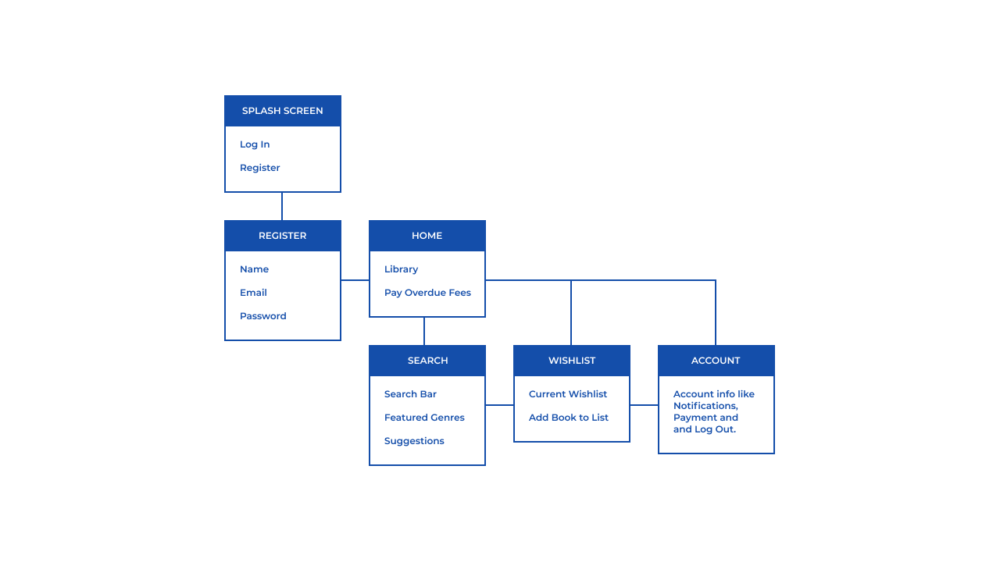
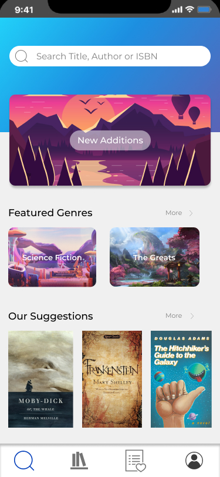

BookNest
BookNest is a mobile application that allows users to borrow E-Books for a definitive period of time. A WishList function enables the users to add books they would like to read that are not available yet but when the book becomes available, will be notified via an E-Mail. The main goal of this application is to enable readers who do not have a lot of money to spare for books but would still like to read the titles they are interested in without any hassle. It is also a lot more convenient for users to read books from the comfort of their home rather than travel to a local library.
Defining the Users of the Application and it's Scope
The main question is why would anyone use this application? Many Paperback Books and E-Books are relatively cheap nowadays and many consider books an investment since they do not perish. According to a study from the Pew Research Center on American reading habits, the number of books an average person reads a year is 12, although this number is inflated due to the number of avid readers who drive up the average.
Let us consider an example of a very famous book. The Design of Everyday Things by Don Norman. This book costs $12.99 for Kindle and $14.18 for the Paperback version on Amazon. For someone who is working a full time job, this book is very inexpensive. But for a student who is on a budget, this might seem kind of expensive especially when they do not plan on re-reading it anytime soon because of their tight schedule. And what if the student we are talking about is an avid reader? The goal of this application is just to give users an opportunity to read books without actually having to buy it.
Meet the users of BookNest
Based on the previous section, I have illustrated 2 prospective user personas for BookNest.

Moodboard
Before I get to designing the application, I wanted to settle on the direction of the design of the application. I created this MoodBoard to include certain style information such as the general colour scheme and font. I chose a Blue Colour scheme because the colour blue is proven to increase productivity as well as lower pulse rate, to ensure a great reading experience for the users. Although, overuse of the colour blue could decrease your appetite or worse, create a feeling of sadness which I definitely wanted to avoid.

Information Architecture
Before I move on to creating the wireframes, I wanted to figure out how the information should be arranged and what the hierarchy should be. I feel that this is a very important step in the process since IA is what decides what should appear on each page of the Mobile Application. For this project, I decided to keep the number of unique functions in the application simple while focusing on the interactivity of the prototype. This way, even for a relatively simple concept for a mobile application, I can provide the users with an immersive experience of the application in the prototype stage itself.

Wireframes
The wireframes below showcase a specific path from the Sitemap. From adding a book to your wishlist and eventually getting a notification stating that the book you desired is being lent by a user and then adding it to Your Library.


Challenges Users could face while using the Application
Challenge 1: An Easy Way to Identify Due Dates
When you borrow a book using BookNest, you can read it for 50 days. Each day after the 50th, you will have to pay an overdue fees if you choose not to return it. By just mentioning dates, the due dates can often to unnoticed by the user and this could be bad for the user. To prevent this, I included a colour coded "progress bar" for the due dates. Orange indicates that the book is past the due date, green indicates that there is still time for the book to be returned and yellow when there is only 1 week left for the book to be returned. Using this Visual cue, I can try to reduce the possibility that the due dates can be missed by the users.

Challenge 2: Recommendations based on Read History
Sometimes, users may not know what to read next after finishing a book. This is similar to how users may not know what to watch after completing their favourite TV Series. To ensure that they always have something to read, recommendations are very important. As soon as the user visit the search page to look for a new book, they get recommendations based on both the genres they read most as well as books that can be considered similar to the ones they have completed. This way, the users can confidently choose from a curated list to prevent the classic case of having a closet full of clothes but saying "I don't have anything to wear".

What I learnt from doing this Project
This is my first UI/UX Project and I had a lot of fun doing. I learnt several things such as coming up with a cool idea of an application, research, finding out who the users would be, collecting images to use in the application and creating the designs using Figma and finally prototyping it using MarvelApp. The key takeaway for me was making the design choices. Asking myself the question "Why am I going with this design choice?" was very important since I had many directions I could choose from.
If I could add a few features to this application, I would definitely add a way to network with fellow readers. This way, they can find out more about the topic they are interested in or get introduced to a new topic they have never read before. So some sort of messaging between users or discussion forums for users. Another thing that I would have added is the capability for users to put up paperback books for sale. This way, users could sell the books they have read to other users to make some quick cash while another user could buy the book they are interested in for a lower cost.